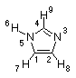
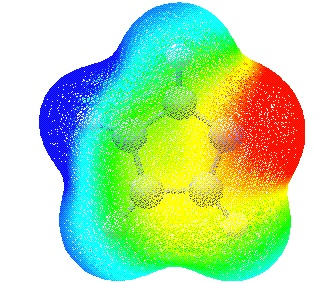

#P Becke3LYP/6-31G(d) cube=(medium,density) scf=tight Becke3LYP/6-31G(d) imidazole density 0 1 C,0,-0.9741771331,0.,-0.6301926171 C,0,-0.907244165,0.,0.7404218415 N,0,0.4034833469,0.,1.1675913068 C,0,1.124080815,0.,0.0676366081 N,0,0.3402990549,0.,-1.0525852362 H,0,0.6597356899,0.,-2.0102490569 H,0,-1.8002953135,0.,-1.3251503429 H,0,-1.7267332321,0.,1.4464261172 H,0,2.2048589411,0.,0.0167357941 imi_den.cub |  |
#P Becke3LYP/6-31G(d) int=finegrid scf=tight geom=check guess=read cube=(medium,potential) Becke3LYP/6-31G(d) imidazole potential 0 1 imi_pot.cub
#!/bin/csh
#PBS -l mem=128mb
#PBS -q long
setenv g03root /usr/local
setenv GAUSS_SCRDIR /scratch
setenv GAUSS_EXEDIR /usr/local/g03b3
setenv GAUSS_ARCHDIR /usr/local/g03b3
setenv LD_LIBRARY_PATH "${GAUSS_EXEDIR}:/usr/lib"
cat >$GAUSS_SCRDIR/$PBS_JOBNAME << EOF
%chk=/scratch/imi1.chk
%mem=6000000
#P Becke3LYP/6-31G(d) scf=tight formcheck
Becke3LYP/6-31G(d) imidazole density + ESP
0 1
C,0,-0.9741771331,0.,-0.6301926171
C,0,-0.907244165,0.,0.7404218415
N,0,0.4034833469,0.,1.1675913068
C,0,1.124080815,0.,0.0676366081
N,0,0.3402990549,0.,-1.0525852362
H,0,0.6597356899,0.,-2.0102490569
H,0,-1.8002953135,0.,-1.3251503429
H,0,-1.7267332321,0.,1.4464261172
H,0,2.2048589411,0.,0.0167357941
EOF
touch $PBS_O_WORKDIR/$PBS_JOBNAME.$HOST
/usr/local/g03b3/g03 < $GAUSS_SCRDIR/$PBS_JOBNAME > $GAUSS_SCRDIR/$PBS_JOBNAME.log
mv $GAUSS_SCRDIR/$PBS_JOBNAME.log $PBS_O_WORKDIR/$PBS_JOBNAME.log
mv $GAUSS_SCRDIR/$PBS_JOBNAME.chk $PBS_O_WORKDIR/$PBS_JOBNAME.chk
rm -f $GAUSS_SCRDIR/$PBS_JOBNAME
mv Test.FChk $PBS_O_WORKDIR/$PBS_JOBNAME.fch
$GAUSS_EXEDIR/cubegen 0 Density=SCF $PBS_O_WORKDIR/$PBS_JOBNAME.fch $PBS_O_WORKDIR/$PBS_JOBNAME.den.cub 0 h
$GAUSS_EXEDIR/cubegen 0 Potential=SCF $PBS_O_WORKDIR/$PBS_JOBNAME.fch $PBS_O_WORKDIR/$PBS_JOBNAME.esp.cub 0 h
exit
|  |
last changes: 30.01.2006, HZ questions & comments to: zipse@cup.uni-muenchen.de